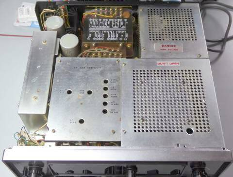 |
こちらが、ケースを取り外したときの上面の様子をフロント側から撮したものです
ほとんどのものが、シールド板に囲われていて、何も見えません
ＶＯＸ関係の調整などは、上蓋を開けるだけで、調整できるようになっていますが、調整には調整ドライバーは必要です |
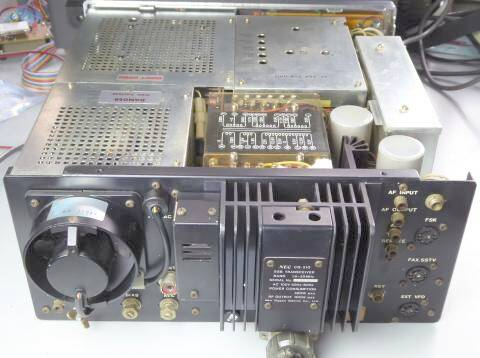
|
上面をリア側から撮したものです
配線などは、ほとんど見えず、シールド板オンパレードです
|
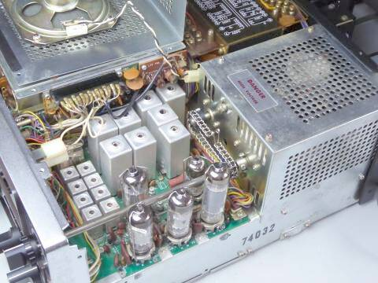 |
ＲＦ部上面です
シールドケースを外して撮しました
真空管５本が見えます
最も特徴としてあげたいのがＭｉｘに７３６０が採用されている点
ＳＳＧ２台と２信号特性測定用パッドで、色々比較をしてみたいところです
前モデル：ＣＱ-１１０より真空管が３本増えています！？
また、シールド等も、ずいぶんと強化された感があります |
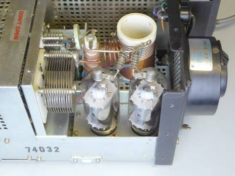 |
ファイナル部分です
シールドケースを外して撮しました
６ＪＳ６Ｃが２本です
高さの点から、ソケットはシャーシより沈めた取付になっています
ＹＡＥＳＵ ＦＴｰＤＸ４０１採用のファンと同じサイズで色違い、でした
プレート同調ＶＣに、減速機構は付いていません |
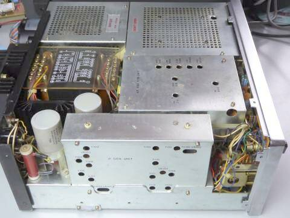 |
ＲＦ部の反対側のサイドを撮しました
手前のシールドＢＯＸがＩＦユニットが収納されている場所です
|
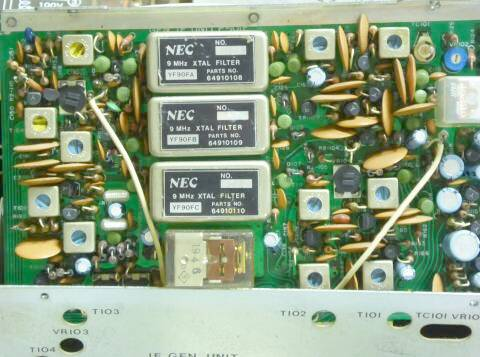 |
こちらも特徴のひとつになるかもしれません
海外ではＤｒａｋｅ、国内ではＴＲＩＯ ＴＳ-９００、ユニデン２０２０が採用した、キャリアひとつで、フィルタでもってモード ＵＳＢ、ＬＳＢ、ＣＷを切り替えるもの
ダイヤルカーソルが動かない、一本で済むというのが最大のメリットです
デメリットは、コスト増！
写真はＩＦユニットをシールドケースから取り出して撮したものです
ＩＦは、９ＭＨｚです |
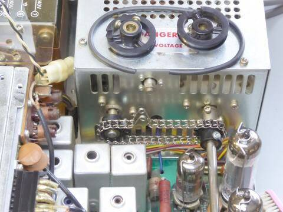 |
長年の放置（保管）の結果、ロードＶＣを駆動するゴムベルトは、見事に劣化していました（切れていました）
プーリーの構造から、糸掛けでも良いかなとも思ったのですが、ここはチェーンで駆動することにしました |
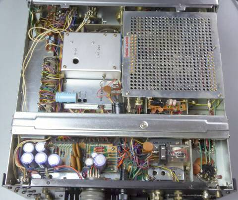 |
こちらがシャーシ底面です
大きなシールド板の下が、ＲＦ部です
アルミの箱に見える部分は、ＶＦＯ部、その下はキャリア発振部です
シャーシ補強の横板が入っています
|
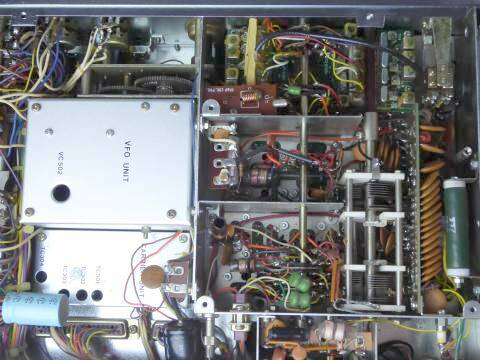 |
こちらは、シャーシ底面のＲＦ部のシールドを取り外して撮しています
ＲＦ同調ＶＣはタイト製で、大小２つのローター／ステーターが２組連動です
もしやコールド側を浮かしているのでは、と期待してみたのですが、残念ながら直列にＣを入れてグランドに落としてありました |
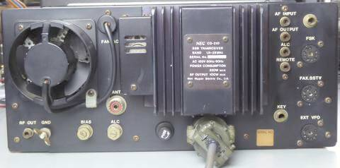 |
こちらは、リアパネル
ＦＳＫ、ＦＡＸ－ＳＳＴＶ用に単独に接続コネクタが用意されているところなどを見るとバブリーな？７０年代を感じます
電源コネクタは、ずいぶんと頑丈なものが採用されています |
|
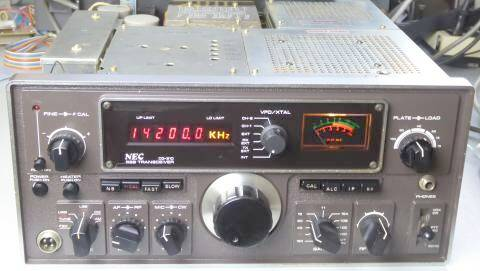
ダイヤルツマミにスケールが付いていません
|
最低必要な修理、修復作業を終えて、あとは最終調整だけ・・・良い感じに仕上がってきました
ＶＦＯ／ＸＴＡＬ切替ツマミは、純正ではありません
メインノブの早送りスタッド？も欠品しています
シーメンス・キーの採用も珍しいし、ヘッドホン端子が右に離れて配置されていることも珍しいです |
ディジタル周波数表示に依存していて、ダイヤルのリニアリティは良くありません
おおよそ１回転当たり２０ＫＨｚですが、５００ＫＨｚ巾の上下ではかなり違いがあります
このことが分かってと言うか、気にしなくて済むようスケール無し、と思われます
ディジタル表示が、いわゆる手抜きに使われた・・・割り切った設計だと思います |
|
モードＳＷが固着して全く動かない、メーターもムービングコイルが固着､ＶＦＯ／ＸＴＡＬ切替ＳＷ，バンドＳＷや送受切替リレーもひどい接触不良と、長期保管の弊害が一杯あり、本当に元通りに動くところまで戻せるか不安がありましたが、一生懸命清掃！に努めた結果、なんとかなりました（機構部品が壊れたとなると、まず修理／修復は困難・・・入手できない！）
最低の動作は得られましたが、ＡＧＣ ＳＬＯＷのＣ（１０μＦ５０Ｖ）が容量抜けしているようです
あと、ＲＩＴ（ＦＩＮＥ-Ｔｕｎｅ）のセンターを合わせる方法が無い（多分）、周波数カウンターの基準周波数の調整がやりにくい構造だし、周波数表示誤差のキャリブレーションが別に用意してあり、その調整範囲内に全体の周波数が収まるよう局発周波数の調整、などちょっとお悩みが残っています |
|
| ＢＡＮＤ（ＭＨｚ） |
ＡＭ
３０％ １ＫＨｚ 変調ＯＮ／ＯＦＦで
S/N１０ｄｂが得られる信号強度 |
ＣＷ／ＳＳＢ
ＲＦ信号のＯＮ／ＯＦＦで
S/N１０ｄｂが得られる信号強度 |
| １．９ |
１．０μV |
０．２μV |
| ３．６ |
１．０μV |
０．２μV |
| ７．１ |
１．０μV |
０．２μV |
| １４．２ |
１．０μV |
０．２μＶ |
| ２１．２ |
１．５μＶ |
０．５μＶ |
| ２８．６ |
１．５μＶ |
０．４μＶ |
| ＢＡＮＤ（ＭＨｚ帯） |
ＣＷ送信出力 |
| １．９ |
１３０Ｗ |
| ３．５ |
１４０Ｗ |
| ７ |
１４０Ｗ |
| １４ |
１４０Ｗ |
| ２１ |
６０Ｗ |
| ２８ |
９０Ｗ |
終段６ＪＳ６ｘ２ に、６７０Ｖ 印加
※２１MHｚ帯のゲイン不足（送受とも）原因不明・・・
解決できれば、受信感度もＵＰするでしょうし、送信パワーも１００Ｗ以上得られると思われます
|
時間がたつと、またまたトラブルが・・・増えた！！
スプリアス測定をやってみようということで、久々に取り出して動作をさせてみました
通電すぐに、パチッという音とともに５Ａのヒューズが飛びました
怪しいのは高圧整流回り
平滑コンデンサは無事でしたが、高圧性整流ダイオードの中に逆方向の抵抗値の低いものが２本
念のため、高圧整流にかかる８本のダイオード全てを交換
この作業中に､パチッという音がしたであろう原因を発見
この整流基板上の抵抗間に、スパークの飛んだ跡が見られます
埃がたまって湿気を吸って、そこから火花が出て出火・・・コンセントの出火事例を目にしますが、どうもこの現象が起きたみたいです
半田のヤニと、そのヤニにくっついた埃をアルコールで拭き取りました
ヒューズが飛ぶ問題はこれで解決
次に生じたのは、感度や出力が安定しない…ショックを与えたり、シャーシをひねったりすると状態が変化します
原因は、アンテナ切替リレーの接点接触不良
なんとか同じ型式のリレーが入手でき、交換して解決です
そうしているうちにやはり？パチパチ放電の音が聞こえてきました
今度は、ＲＦユニットの基板下から接続するコネクタのピンの間で火花が出ています（こちらは中圧：３００V強）
こちらも半田のヤニの上に貯まった埃が原因です
上記同様にお掃除しました
感度計測を行っていると、受信中に突然バリバリと大きなノイズが聞こえます
今度はバンド切替ＳＷの接点と、ＳＷのシャフト間で小さな火花が散っています
ベークライトの絶縁不良が生じています
どうしようかと思ったのですが、とりあえず放電箇所に接着剤を少し塗布して絶縁強化を図ってみました
当然ですが、接点に接着剤が着くとマズいですので、ここは細心の注意でもって・・・・今のところ無事です
ＡＧＣが常にＦＡＳＴ状態では、ＳＳＢ受信には耐えがたいので、強引に（既設のチューブラ型電解Ｃの足を切って）新たに積層セラミック（１０μＦ５０Ｖ）を半田付けしました
その結果が、上記の表です
受信感度は、リレーの交換で本来の状態に戻ったようで、１４ＭＨｚ帯以下はなかなかの感度です
２１MHｚ帯のゲイン不足の原因が分かりません・・・２８ＭＨｚ帯より低い感度、パワーです
ハイバンドに関しては、そこは真空管の採用がアダになっているようで、ご覧のように少し感度低下がみられます
一度整備をしていても、また時間が経過すると、いろいろ症状が出るものです |
| 2022.07－2023.10 |
|